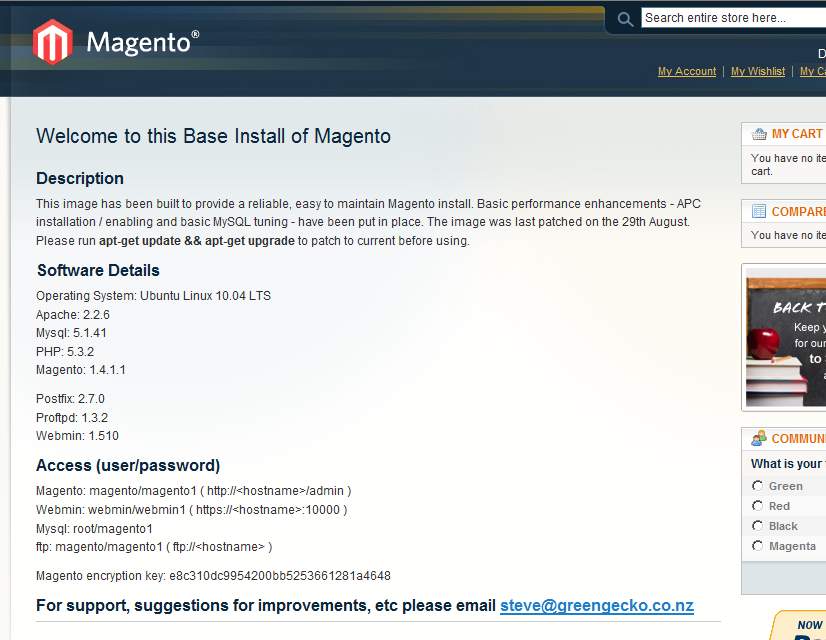
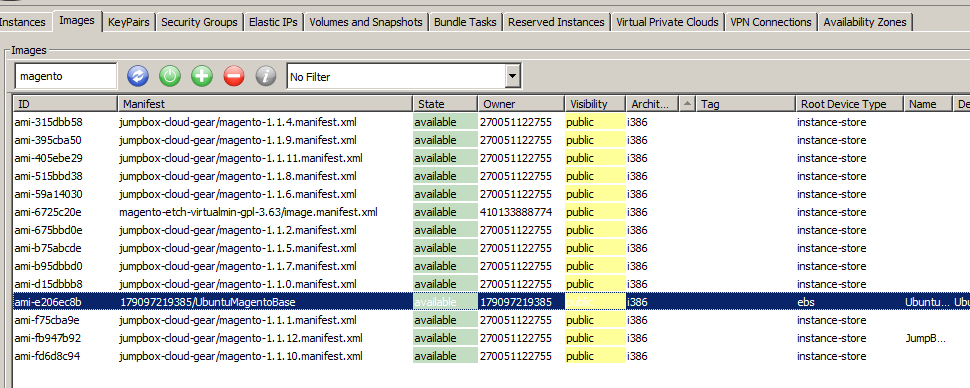

<?xml version="1.0" encoding="UTF-8"?><rss version="2.0"
	xmlns:content="http://purl.org/rss/1.0/modules/content/"
	xmlns:wfw="http://wellformedweb.org/CommentAPI/"
	xmlns:dc="http://purl.org/dc/elements/1.1/"
	xmlns:atom="http://www.w3.org/2005/Atom"
	xmlns:sy="http://purl.org/rss/1.0/modules/syndication/"
	xmlns:slash="http://purl.org/rss/1.0/modules/slash/"
	>

<channel>
	<title>magento &#8211; On web to print sofware, solutions and hosted services</title>
	<atom:link href="http://www.zetaprints.com/blog/tag/magento/feed/" rel="self" type="application/rss+xml" />
	<link>http://www.zetaprints.com/blog</link>
	<description>From web to print and everything in between</description>
	<lastBuildDate>Fri, 02 Aug 2013 10:44:32 +0000</lastBuildDate>
	<language>en-US</language>
	<sy:updatePeriod>hourly</sy:updatePeriod>
	<sy:updateFrequency>1</sy:updateFrequency>
	<generator>https://wordpress.org/?v=4.4.1</generator>
	<item>
		<title>Order approval for Magento</title>
		<link>http://www.zetaprints.com/blog/2010/10/18/order-approval-for-magento/</link>
		<comments>http://www.zetaprints.com/blog/2010/10/18/order-approval-for-magento/#respond</comments>
		<pubDate>Tue, 19 Oct 2010 00:55:31 +0000</pubDate>
		<dc:creator><![CDATA[admin]]></dc:creator>
				<category><![CDATA[web-to-print features]]></category>
		<category><![CDATA[web-to-print software]]></category>
		<category><![CDATA[magento]]></category>
		<category><![CDATA[web-to-print extension]]></category>

		<guid isPermaLink="false">http://www.zetaprints.com/blog/?p=622</guid>
		<description><![CDATA[We had a bit of a gap in our web-to-print Magento offering for customers working with corporate or on-account users. We created a Magento access control extension long time ago, but order approval remained unresolved until now. Magento order approval Magento order approval extension adds an extra step between the customer’s shopping cart and the [&#8230;]]]></description>
				<content:encoded><![CDATA[<p>We had a bit of a gap in our web-to-print Magento offering for customers working with corporate or on-account users. We created a <a title="web-to-print and magento access control" href="../../../../magento-web-to-print/magento-access-control/">Magento access control extension</a> long time ago, but order approval remained unresolved until now.</p>
<h2>Magento order approval</h2>
<p><a title="web-to-print magento order approval" href="../../../../magento-web-to-print/magento-order-approval/">Magento order approval extension</a> adds an extra step between the customer’s shopping cart  and the   checkout process. It means that customers are able to add any  number of   products into their shopping cart, delete and modify them at  any time   without any restrictions, but they can not checkout products  from the cart before they are approved.</p>
<p>Order approval extension is free and can be used separately without our <a title="magento web-to-print" href="../../../../category/magento-web-to-print/">web-to-print extension</a> or ZetaPrints account.</p>
<div style="width: 460px" class="wp-caption alignnone"><a href="../../../../magento-web-to-print/magento-order-approval/"></a><p class="wp-caption-text">/magento-web-to-print/magento-order-approval</p></div>
]]></content:encoded>
			<wfw:commentRss>http://www.zetaprints.com/blog/2010/10/18/order-approval-for-magento/feed/</wfw:commentRss>
		<slash:comments>0</slash:comments>
		</item>
		<item>
		<title>Free AWS Magento image for web-to-print</title>
		<link>http://www.zetaprints.com/blog/2010/09/01/free-aws-magento-image-for-web-to-print/</link>
		<comments>http://www.zetaprints.com/blog/2010/09/01/free-aws-magento-image-for-web-to-print/#respond</comments>
		<pubDate>Wed, 01 Sep 2010 08:13:59 +0000</pubDate>
		<dc:creator><![CDATA[admin]]></dc:creator>
				<category><![CDATA[web-to-print software]]></category>
		<category><![CDATA[aws]]></category>
		<category><![CDATA[free]]></category>
		<category><![CDATA[free stuff]]></category>
		<category><![CDATA[hosting]]></category>
		<category><![CDATA[magento]]></category>

		<guid isPermaLink="false">http://www.zetaprints.com/blog/?p=599</guid>
		<description><![CDATA[Setting up Magento can be a bit of a hassle. Doing it on AWS (Amazon Web Services) for the first time is even more so. Good guys from GreenGeko made it a bit easier for all of us and released a free AWS image full of goodies with Magento already installed. Anyone thinking of decent [&#8230;]]]></description>
				<content:encoded><![CDATA[<p>Setting up <a title="Magento + web-to-print" href="../../../../magento-web-to-print/">Magento</a> can be a bit of a hassle. Doing it on <a title="Amazon Web Services" href="https://aws.amazon.com/ec2/#pricing">AWS </a>(Amazon Web Services) for the first time is even more so. Good guys from <a title="Magento support" href="http://www.greengecko.co.nz/">GreenGeko</a> made it a bit easier for all of us and released a <a title="Images can be unsafe. Check before use." href="http://docs.amazonwebservices.com/AWSEC2/latest/DeveloperGuide/AESDG-chapter-usingsharedamis.html#usingsharedamis-security">free AWS image</a> full of goodies with Magento already installed.</p>
<p>Anyone thinking of <a title="Magento web-to-print hosting" href="../../../../magento-web-to-print/hosting/">decent hosting</a> for your <a title="Magento web-to-print extension" href="https://www.magentocommerce.com/magento-connect/web-to-print-and-dynamic-imaging.html">Magento web-to-print</a> site can give it a try. This is the page you get after launching the instance.</p>
<p><a href="../../../wp-content/uploads/2010/09/magento-for-web-to-print.png"></a></p>
<h2>How to find it</h2>
<p>Assuming you already have your <a title="Sign up to AWS if needed." href="http://aws.amazon.com/">AWS account</a>, a <a title="Sign up if you don't have web2print yet" href="../../../../printers/web-to-print-sign-up/">ZetaPrints account</a> and <a title="ElasticFox for FireFox" href="http://developer.amazonwebservices.com/connect/entry.jspa?externalID=609">ElasticFox</a> addon it&#8217;s relatively simple.</p>
<ol>
<li>Open ElasticFox and log in to your AWS account</li>
<li>Click on Images tab</li>
<li>Wait for the list to appear</li>
<li>Type in Magento into the text box as in the screenshot below. You should see a much reduced list.</li>
<li>Choose an image with a title resembling the one in the screenshot.</li>
<li>Right-click on the selected image and launch an instance.</li>
<li>Go to Instances tab and grab the public address / DNS name from the properties once the instance is running.</li>
<li>Paste the address into your web browser.</li>
</ol>
<p>You should see a page similar to the screen-shot above with all the details about the instance, Magento and support options.</p>
<p><a href="../../../wp-content/uploads/2010/09/web-to-print-image.png"></a></p>
<h2>Other Magento images</h2>
<p>There are some other Magento images, mainly by <a title="OpenSource as a service" href="http://www.jumpbox.com/pricing">JumpBox</a>. You can try them as well, but you are in for a bit of expense. Check them out. Could be value for money for you. We&#8217;ll stick with the free option for now.</p>
<h2>Magento support</h2>
<p>As much as we want to switch you to Magento we cannot assist with the installation or support of your Magento site. Our <a title="Magento web-to-print partners" href="../../../../magento-web-to-print/magento-partners/">partners </a>will be happy to help you.</p>
<h2>Magento web-to-print</h2>
<p>This Magento image has no pre-installed <a title="Magento web-to-print" href="../../../../category/magento-web-to-print/">web-to-print</a>. Follow <a title="magento web-to-print set-up" href="../../../../help/magento/">our instructions</a> to set up and configure your <a title="magento web-to-print demo" href="../../../../magento/">web-to-print site</a>.</p>
]]></content:encoded>
			<wfw:commentRss>http://www.zetaprints.com/blog/2010/09/01/free-aws-magento-image-for-web-to-print/feed/</wfw:commentRss>
		<slash:comments>0</slash:comments>
		</item>
		<item>
		<title>Magento web-to-print: check your payment rules</title>
		<link>http://www.zetaprints.com/blog/2010/07/27/magento-web-to-print-check-your-payment-rules/</link>
		<comments>http://www.zetaprints.com/blog/2010/07/27/magento-web-to-print-check-your-payment-rules/#respond</comments>
		<pubDate>Tue, 27 Jul 2010 22:10:13 +0000</pubDate>
		<dc:creator><![CDATA[admin]]></dc:creator>
				<category><![CDATA[web-to-print software]]></category>
		<category><![CDATA[magento]]></category>
		<category><![CDATA[web-to-pring extension]]></category>

		<guid isPermaLink="false">http://www.zetaprints.com/blog/?p=588</guid>
		<description><![CDATA[We noticed a few customers running our Magento web-to-print extension didn&#8217;t configure their payment rules correctly and are open for a bit of a rip off. Namely, if you set your billing rules in Magento to credit card only for certain countries and not the others, then those others have an option of paying by [&#8230;]]]></description>
				<content:encoded><![CDATA[<p>We noticed a few customers running our Magento <a title="Magento web-to-print" href="../../../../magento/">web-to-print extension</a> didn&#8217;t configure their payment rules correctly and are open for a bit of a rip off.</p>
<p>Namely, if you set your billing rules in Magento to <em>credit card only</em> for certain countries and not the others, then those others have an option of paying by <em>money order</em>. It means they have a free run if you allow file downloading.</p>
<p>By the way, did you look at our <a title="Magento and web-to-print" href="https://www.magentocommerce.com/magento-connect/web-to-print-and-dynamic-imaging.html">latest stable release?</a></p>
<p>Several <a title="Magento web-to-print release notes" href="http://code.google.com/p/magento-w2p/wiki/ReleaseNotes">improvements</a> in there and more in the works. <a title="Magento web-to-print project" href="http://code.google.com/p/magento-w2p/issues/list?can=2&q=stream=Approval">Order approval</a> is one of them. Let us know about your desired approval process. We try to make the process as generic as possible, but yours may have some interesting twists we need to know about.</p>
]]></content:encoded>
			<wfw:commentRss>http://www.zetaprints.com/blog/2010/07/27/magento-web-to-print-check-your-payment-rules/feed/</wfw:commentRss>
		<slash:comments>0</slash:comments>
		</item>
		<item>
		<title>Web-to-print extension for Magento update</title>
		<link>http://www.zetaprints.com/blog/2010/06/08/web-to-print-extension-for-magento-update/</link>
		<comments>http://www.zetaprints.com/blog/2010/06/08/web-to-print-extension-for-magento-update/#respond</comments>
		<pubDate>Tue, 08 Jun 2010 10:31:32 +0000</pubDate>
		<dc:creator><![CDATA[admin]]></dc:creator>
				<category><![CDATA[web-to-print features]]></category>
		<category><![CDATA[web-to-print software]]></category>
		<category><![CDATA[magento]]></category>
		<category><![CDATA[stable release]]></category>

		<guid isPermaLink="false">http://www.zetaprints.com/blog/?p=565</guid>
		<description><![CDATA[We released a stable version of our web-to-print for Magento extension a few hrs ago. Lot&#8217;s of new features. Worth a look. Upgrading existing web-to-print installations Do not upgrade your production site. Test it on a separate site first, make sure your custom theme is compatible. Changes are likely to be required. See Release notes [&#8230;]]]></description>
				<content:encoded><![CDATA[<p>We released a stable version of our <a title="Magento web-to-print" href="https://www.magentocommerce.com/magento-connect/web-to-print-and-dynamic-imaging.html">web-to-print for Magento extension</a> a few hrs ago. Lot&#8217;s of new features. Worth a look.</p>
<h2>Upgrading existing web-to-print installations</h2>
<p>Do not upgrade your production site. Test it on a separate site first, make sure your custom theme is compatible. Changes are likely to be required. See <a title="Magento web-to-print release notes" href="http://code.google.com/p/magento-w2p/wiki/ReleaseNotes">Release notes</a> for more info.</p>
<p>Feel free to drop us a line on <a title="Contact ZetaPrints" href="mailto:support@zetaprints.com" target="_self">support@zetaprints.com</a> if you run into problems with the upgrade.</p>
<h2>Lots of new web-to-print features and info</h2>
<p>We added some more info to our website to <a title="Magento web-to-print" href="../../../../category/magento-web-to-print/">showcase Magento web-to-print features and capabilities</a>. Also, we re-built our <a title="web-to-print demo" href="../../../../magento/">demo web-to-print store</a> where you can try the user interface and new in-preview editing.</p>
<h2>Experimental features</h2>
<p>We are working on an update to our API to make it more consistent. It will not be fully backward compatible. The new <a title="web-to-print in-preview editing" href="../../../../magento-web-to-print/magento-interactive-personalization/">interactive personalization</a> will be completely replaced in the coming releases. Please, do not enable this feature in production yet.</p>
]]></content:encoded>
			<wfw:commentRss>http://www.zetaprints.com/blog/2010/06/08/web-to-print-extension-for-magento-update/feed/</wfw:commentRss>
		<slash:comments>0</slash:comments>
		</item>
		<item>
		<title>Magento for web-to-print</title>
		<link>http://www.zetaprints.com/blog/2010/03/18/magento-for-web-to-print/</link>
		<comments>http://www.zetaprints.com/blog/2010/03/18/magento-for-web-to-print/#respond</comments>
		<pubDate>Thu, 18 Mar 2010 08:01:46 +0000</pubDate>
		<dc:creator><![CDATA[admin]]></dc:creator>
				<category><![CDATA[web-to-print software]]></category>
		<category><![CDATA[magento]]></category>
		<category><![CDATA[translations]]></category>
		<category><![CDATA[web-to-pring extension]]></category>

		<guid isPermaLink="false">http://www.zetaprints.com/blog/?p=557</guid>
		<description><![CDATA[We released a stable version of web&#8211;to-print extension for Magento 1.4. Lots of new web-to-print features. New web-to-print features It is fully compatible with the new Magento release and has a log of new features. Image editing is one of them. Images cannot be moved yet, but they can be cropped and rotated right on [&#8230;]]]></description>
				<content:encoded><![CDATA[<p>We released <a title="web-to-print, stable" href="https://www.magentocommerce.com/magento-connect/web-to-print-and-dynamic-imaging.html">a stable version of web&#8211;to-print extension for Magento 1.4</a>. Lots of new web-to-print features.</p>
<h2>New web-to-print features</h2>
<p>It is fully compatible with the new Magento release and has a log of new features. Image editing is one of them. Images cannot be moved yet, but they can be cropped and rotated right on the previews page. You can<a title="web-to-print demo" href="../../../../magento/index.php/realestate-signs/remax-signs/remax-horizontal-sign-01-2-photos-24-x-18.html"> try it live</a> on our <a title="web-to-print demo" href="../../../../magento/">demo Magento web-to-print site</a>.</p>
<h2>Web-to-print in your language</h2>
<p>Magento itself can be run in many languages. All popular ones have already been translated to. Our <a title="web-to-print translations" href="../../../../help/magento-web-to-print-localization/">web-to-print extension can be translated</a> as well. You can run it in German, French, you name. There are lots of translation packages ready to be downloaded and installed. Translate the web-to-print part and it will be all in your language.</p>
<h2>Web-to-print extension is ahead of ZP</h2>
<p>In some respect, our Magento extension is more advanced than the standard ZetaPrints web-to-print interface. It is definitely better suited for applications where the visual part of the interface is more important than its simplicity.</p>
<h2>Do you want to migrate?</h2>
<p>Anyone looking at customization of your web-to-print portal should seriously look into our Magento web-to-print extension. We can definitely help you with setting up a Magento web-to-print site and migrating your ZP data there. Let us know if you are interested.</p>
]]></content:encoded>
			<wfw:commentRss>http://www.zetaprints.com/blog/2010/03/18/magento-for-web-to-print/feed/</wfw:commentRss>
		<slash:comments>0</slash:comments>
		</item>
		<item>
		<title>Magento web-to-print image uploading</title>
		<link>http://www.zetaprints.com/blog/2010/02/12/magento-web-to-print-image-uploading/</link>
		<comments>http://www.zetaprints.com/blog/2010/02/12/magento-web-to-print-image-uploading/#respond</comments>
		<pubDate>Fri, 12 Feb 2010 07:34:48 +0000</pubDate>
		<dc:creator><![CDATA[admin]]></dc:creator>
				<category><![CDATA[web-to-print software]]></category>
		<category><![CDATA[image uploading]]></category>
		<category><![CDATA[magento]]></category>

		<guid isPermaLink="false">http://www.zetaprints.com/blog/?p=555</guid>
		<description><![CDATA[We toyed for a while with image uploading in our Magento web-to-print extension. It was working so-so for some weeks, but now it progressed to a stable build. Try this demo web-to-print template. There was a number of improvements in the admin area and web-to-print data import as well. Add our Magento access control extension [&#8230;]]]></description>
				<content:encoded><![CDATA[<p>We toyed for a while with image uploading in our <a title="web-to-print demo" href="../../../../magento/">Magento web-to-print</a> extension. It was working so-so for some weeks, but now it progressed to a <a title="Version 1.7" href="https://www.magentocommerce.com/magento-connect/web-to-print-and-dynamic-imaging.html">stable build</a>.</p>
<p>Try this <a title="web-to-print for magento demo" href="../../../../magento/index.php/real-estate-signs/fsbo-square-sign-01-3-photos-24-x-24.html">demo web-to-print template</a>.</p>
<p>There was a number of improvements in the admin area and web-to-print data import as well.</p>
<p>Add our <a title="catalog access" href="https://www.magentocommerce.com/magento-connect/category-access-control.html">Magento access control</a> extension and it comes together into a neat corporate web-to-print portal with you in control of the presentation and workflow.</p>
<p>We are working on image editing and approval process at the moment.</p>
<h2>Help with setting up</h2>
<p>Unfortunately we can help only so much with setting up and configuring a Magento web-to-print store. There was a number of successful installations and the freelance developers that did it will be happy to help you too. The cost is likely to be much lower than hiring a web development company. Send us an email and we&#8217;ll put you in touch with someone.</p>
]]></content:encoded>
			<wfw:commentRss>http://www.zetaprints.com/blog/2010/02/12/magento-web-to-print-image-uploading/feed/</wfw:commentRss>
		<slash:comments>0</slash:comments>
		</item>
		<item>
		<title>Image editing API for web-to-print</title>
		<link>http://www.zetaprints.com/blog/2010/01/28/image-editing-api-for-web-to-print/</link>
		<comments>http://www.zetaprints.com/blog/2010/01/28/image-editing-api-for-web-to-print/#respond</comments>
		<pubDate>Fri, 29 Jan 2010 02:22:14 +0000</pubDate>
		<dc:creator><![CDATA[admin]]></dc:creator>
				<category><![CDATA[API]]></category>
		<category><![CDATA[web-to-print features]]></category>
		<category><![CDATA[web-to-print software]]></category>
		<category><![CDATA[magento]]></category>

		<guid isPermaLink="false">http://www.zetaprints.com/blog/?p=550</guid>
		<description><![CDATA[We released a beta version of some image management and image editing functions for our web-to-print API. There is not much at the moment: get list of images get image details upload new delete crop rotate edit title Some other functions are in stealth mode and will be released soon: copy to different folder move [&#8230;]]]></description>
				<content:encoded><![CDATA[<p>We released a beta version of some <a title="image management for web-to-print" href="../../../../help/web-to-print-image-library-api/">image management</a> and <a title="image editing for web-to-print" href="../../../../help/image-editing-api/">image editing</a> functions for our <a title="web-to-print API" href="../../../../help/category/api/">web-to-print API</a>.</p>
<p>There is not much at the moment:</p>
<ul>
<li>get list of images</li>
<li>get image details</li>
<li>upload new</li>
<li>delete</li>
<li>crop</li>
<li>rotate</li>
<li>edit title</li>
</ul>
<p>Some other functions are in stealth mode and will be released soon:</p>
<ul>
<li>copy to different folder</li>
<li>move to different folder</li>
</ul>
<p>We want to add a few filters to the mix, e.g. grayscale,  sepia, watercolor, etc. Need your input on what you think will be popular with your web-to-print customers. Your suggestion on what you think is a good implementation of this functionality are very welcome.</p>
<p>Web-to-print image editing will appear in our <a title="web-to-print for magento" href="../../../../magento/">Magento web-to-print plugin</a> first and then will be transferred to the core user interface. This is <a title="image editing for magento" href="http://code.google.com/p/magento-w2p/issues/detail?id=110">work in progress</a> at the moment.</p>
]]></content:encoded>
			<wfw:commentRss>http://www.zetaprints.com/blog/2010/01/28/image-editing-api-for-web-to-print/feed/</wfw:commentRss>
		<slash:comments>0</slash:comments>
		</item>
		<item>
		<title>Image uploading for Magento Web-to-print</title>
		<link>http://www.zetaprints.com/blog/2010/01/27/image-uploading-for-magento-web-to-print/</link>
		<comments>http://www.zetaprints.com/blog/2010/01/27/image-uploading-for-magento-web-to-print/#respond</comments>
		<pubDate>Wed, 27 Jan 2010 23:45:58 +0000</pubDate>
		<dc:creator><![CDATA[admin]]></dc:creator>
				<category><![CDATA[web-to-print software]]></category>
		<category><![CDATA[file uploading]]></category>
		<category><![CDATA[magento]]></category>

		<guid isPermaLink="false">http://www.zetaprints.com/blog/?p=546</guid>
		<description><![CDATA[Magento web-to-print update We are actively working on image uploading and image editing for our Magento web-to-print extension. It has not been finished yet, but we are looking for early adopters to help with polishing the feature. Please, download the latest beta and give it a try. Send your questions to web-to-print support at support@zetaprints.com. [&#8230;]]]></description>
				<content:encoded><![CDATA[<h2>Magento web-to-print update</h2>
<p>We are actively working on image uploading and image editing for our Magento web-to-print extension. It has not been finished yet, but we are looking for early adopters to help with polishing the feature.</p>
<p>Please, download the latest beta and give it a try. Send your questions to web-to-print support at <a title="Contact ZetaPrints" href="mailto:support@zetaprints.com" target="_self">support@zetaprints.com</a>.</p>
<h2>Performance problems</h2>
<p>The site is running much slower than it used to. We are adding more capacity over the weekend. There is a problem with auto-scaling and we don&#8217;t want to cause any disruption while the ordering is in full swing.</p>
]]></content:encoded>
			<wfw:commentRss>http://www.zetaprints.com/blog/2010/01/27/image-uploading-for-magento-web-to-print/feed/</wfw:commentRss>
		<slash:comments>0</slash:comments>
		</item>
		<item>
		<title>Corporate web-to-print portals with Magento</title>
		<link>http://www.zetaprints.com/blog/2010/01/20/corporate-web-to-print-portals-with-magento/</link>
		<comments>http://www.zetaprints.com/blog/2010/01/20/corporate-web-to-print-portals-with-magento/#respond</comments>
		<pubDate>Wed, 20 Jan 2010 11:23:40 +0000</pubDate>
		<dc:creator><![CDATA[admin]]></dc:creator>
				<category><![CDATA[web-to-print software]]></category>
		<category><![CDATA[access control]]></category>
		<category><![CDATA[magento]]></category>
		<category><![CDATA[web-to-pring extension]]></category>

		<guid isPermaLink="false">http://www.zetaprints.com/blog/?p=540</guid>
		<description><![CDATA[We released a beta version of an access control extension for Magento. Magento Community edition (the free one) has no access control. It&#8217;s a feature of their Enterprise edition, which costs money. We created a simple extension that allows access control at a basic level, but it should do the job for small portals. Please, [&#8230;]]]></description>
				<content:encoded><![CDATA[<p>We released a beta version of an <a title="access control for web-to-print" href="https://www.magentocommerce.com/magento-connect/category-access-control.html">access control extension for Magento</a>.</p>
<p>Magento Community edition (the free one) has no access control. It&#8217;s a feature of their Enterprise edition, which costs money. We created a simple extension that allows access control at a basic level, but it should do the job for small portals. Please, <a title="access control for web-to-print" href="https://www.magentocommerce.com/magento-connect/category-access-control.html">give it a try</a>.</p>
<h2>Web-to-print extension update</h2>
<p>We also released a stable update for our <a title="web-to-print for magento" href="https://www.magentocommerce.com/magento-connect/web-to-print-and-dynamic-imaging.html">web-to-print extension</a> for Magento. It went through a dozen of betas and has many bugs fixed, plus many new features. It&#8217;s really shaping up now. Image uploading and basic editing features are in the works. We planned to release them couple of weeks ago, but the festive season got on the way.</p>
<p>You need to update the XML in data import and product creation profiles for the latest upgrade to work correctly. See the latest <a title="magento web-to-print help" href="../../../../help/import-web-to-print-data/">help for web-to-print extension</a>.</p>
<h2>Problems with emails</h2>
<p>We are having problems with many emails not being delivered. It is a complex issue with some of it beyond our control. We are trying to find altenatives, but it may take another 24 hrs.</p>
<p>Would you like notifications about new web-to-print orders to arrive as text messages to your cellphone via Twitter? Flick us an email and we&#8217;ll set you up.</p>
]]></content:encoded>
			<wfw:commentRss>http://www.zetaprints.com/blog/2010/01/20/corporate-web-to-print-portals-with-magento/feed/</wfw:commentRss>
		<slash:comments>0</slash:comments>
		</item>
		<item>
		<title>Web-to-print API update</title>
		<link>http://www.zetaprints.com/blog/2009/10/23/web-to-print-api-update/</link>
		<comments>http://www.zetaprints.com/blog/2009/10/23/web-to-print-api-update/#respond</comments>
		<pubDate>Fri, 23 Oct 2009 08:42:27 +0000</pubDate>
		<dc:creator><![CDATA[admin]]></dc:creator>
				<category><![CDATA[Web-to-Print reviews]]></category>
		<category><![CDATA[API]]></category>
		<category><![CDATA[cache]]></category>
		<category><![CDATA[magento]]></category>

		<guid isPermaLink="false">http://www.zetaprints.com/blog/?p=502</guid>
		<description><![CDATA[A minor tweak to template details XML allowed us to include cached user input. Supplying user id and hash (ID, Hash) as part of api-template requests adds Value attribute to text and image fields in the template xml. This attribute contains the last used value for that field, but not necessary with the current template. [&#8230;]]]></description>
				<content:encoded><![CDATA[<p>A minor tweak to template details XML allowed us to include cached user input.</p>
<p>Supplying user id and hash (<em>ID, Hash</em>) as part of <em>api-template</em> requests adds Value attribute to text and image fields in the template xml. This attribute contains the last used value for that field, but not necessary with the current template.</p>
<p>It is very convenient to users to get their last input as they try different products. Consider including it into your custom implementation.</p>
<p>Our web-to-print extension for Magento will include this feature in the next release some time this week.</p>
]]></content:encoded>
			<wfw:commentRss>http://www.zetaprints.com/blog/2009/10/23/web-to-print-api-update/feed/</wfw:commentRss>
		<slash:comments>0</slash:comments>
		</item>
	</channel>
</rss>

<!-- Localized -->